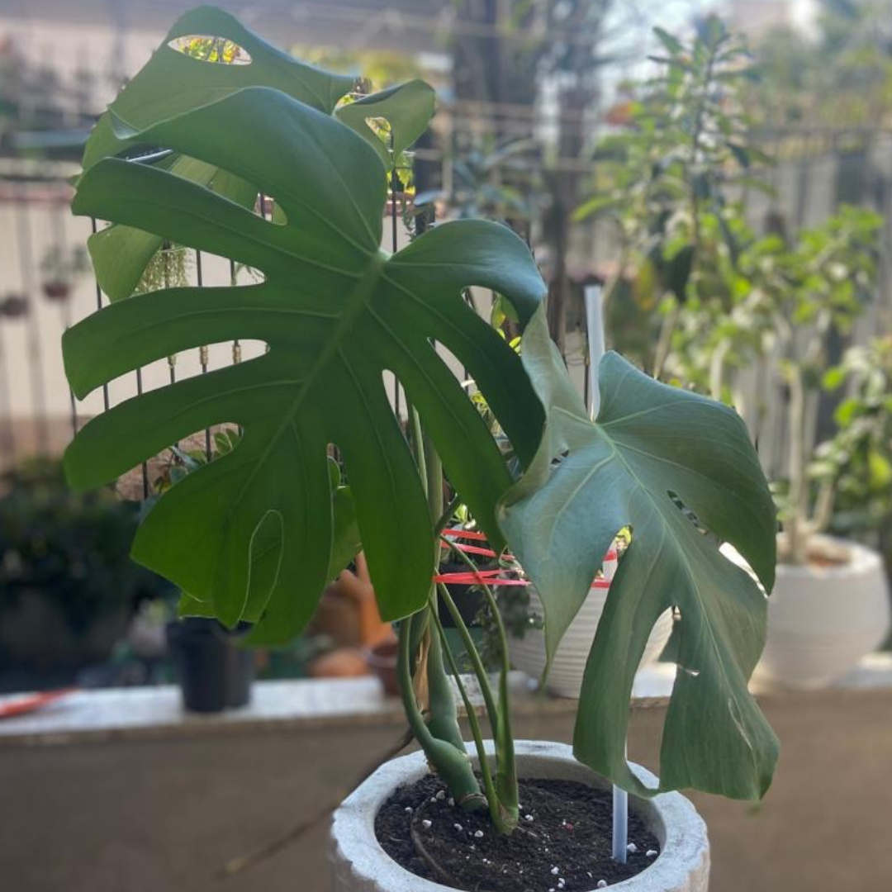

Costela-de-Adão: Beleza Tropical e Cuidados Essenciais

A **Costela-de-Adão** (*Monstera deliciosa*) é, sem dúvida, um ícone na decoração, trazendo um toque tropical e sofisticado a qualquer ambiente. Suas folhas grandes e recortadas são inconfundíveis e a tornam uma das plantas mais cobiçadas para interiores. Originária das florestas tropicais da América Central e do Sul, essa beleza exótica se adapta bem a diversos espaços, desde que suas necessidades específicas sejam atendidas.
Cuidados Essenciais com sua Costela-de-Adão
Por ser uma planta de origem tropical, a Costela-de-Adão é afeita a ambientes com **alta umidade** e **foge de luz solar direta**.
- **Luz:** Ela prospera em **luz indireta brilhante**. A exposição direta ao sol pode queimar suas folhas, então posicione-a em locais onde receba bastante luminosidade, mas sem a incidência direta dos raios solares. Ela tolera meia-sombra, mas seu crescimento e a beleza de suas folhas serão otimizados com luz indireta abundante.
- **Rega:** A Costela-de-Adão aprecia solo sempre **levemente úmido**. É crucial evitar o encharcamento, que pode levar ao apodrecimento das raízes. Verifique a umidade do solo antes de regar novamente – o ideal é que os primeiros centímetros do substrato estejam secos ao toque.
- **Umidade:** Como uma planta tropical, ela se beneficia de **alta umidade**. Se o ar em sua casa for muito seco, considere borrifar água nas folhas regularmente ou utilizar um umidificador próximo à planta.
- **Suporte:** A *Monstera deliciosa* é naturalmente uma **trepadeira**. Em seu habitat natural, ela utiliza árvores para escalar e buscar luz. Em casa, à medida que cresce, ela precisará de um **tutor ou suporte** (como um musgo ou uma estaca) para que suas raízes aéreas possam se fixar, garantindo um crescimento mais vigoroso e organizado.
Propagação por Mudas
Propagar a Costela-de-Adão é um processo gratificante. A maneira mais comum é através de **estacas**. Basta cortar um pedaço do caule que contenha pelo menos um nó (onde as folhas e raízes aéreas se desenvolvem) e uma folha. Essa estaca pode ser colocada em água ou diretamente em um substrato úmido até que as raízes se desenvolvam. Troque a água regularmente se optar pelo método aquático para evitar a proliferação de bactérias.
Toxicidade: Um Alerta Importante
Apesar de toda a sua exuberância, é fundamental saber que a Costela-de-Adão é **tóxica** se ingerida, tanto para humanos quanto para animais de estimação, especialmente **gatos**.
- **Por que é tóxica?** A planta contém **cristais insolúveis de oxalato de cálcio**, substâncias pontiagudas microscópicas. Quando mastigadas ou ingeridas, esses cristais penetram nos tecidos da boca, garganta e sistema digestório, causando uma série de reações adversas.
- **Resultados da intoxicação em animais (gatos):** Em gatos, a ingestão pode levar a:
- **Irritação oral intensa:** Dor, queimação e inchaço na boca e garganta.
- **Salivação excessiva (sialorreia):** Devido à irritação, o animal pode babar profusamente.
- **Vômito e diarreia:** O trato gastrointestinal pode ser afetado, causando desconforto digestivo.
- **Dificuldade para engolir (disfagia):** O inchaço e a dor na garganta podem dificultar a deglutição.
- **Perda de apetite:** O desconforto pode fazer com que o gato se recuse a comer.
Para garantir a segurança dos seus pets, o ideal é posicionar a Costela-de-Adão em locais **completamente fora do alcance** deles, como em prateleiras altas, em vasos suspensos ou criando barreiras físicas eficazes. Se houver suspeita de ingestão, procure imediatamente um médico veterinário.
Além da *Monstera deliciosa*: Uma Família Diversa
Embora a *Monstera deliciosa* seja a mais conhecida, o gênero *Monstera* é vasto e oferece diversas espécies, cada uma com suas particularidades e charme. Algumas das mais populares incluem:
- **Monstera adansonii (Monstera Suíça ou Queijo Suíço):** Caracterizada por folhas menores com furos ovais distintos (fenestrações), que não chegam a ser recortes completos como na *deliciosa*. É uma trepadeira mais delicada, excelente para cestas suspensas.
- **Monstera obliqua:** Uma das mais raras e cobiçadas, famosa por suas fenestrações extremas, que ocupam a maior parte da superfície da folha, deixando apenas uma fina borda verde. É delicada e exige condições bem específicas para prosperar.
- **Monstera standleyana:** Apresenta folhas mais alongadas e pontiagudas, geralmente sem recortes profundos, mas com um padrão de variegatação em tons de creme ou branco que a torna muito atraente.
- **Monstera siltepecana:** Também conhecida como "El Salvador", suas folhas têm uma textura um pouco mais áspera e um padrão de furos alongados, com um tom verde mais escuro e um brilho prateado.
Poda e Manutenção: Moldando o Crescimento
A Costela-de-Adão é uma planta vigorosa e a poda é importante não só para controlar seu tamanho, mas também para incentivar um crescimento mais cheio e saudável.
- **Quando Podar:** Você pode podar a qualquer momento se a planta estiver ficando muito grande ou com galhos sem folhas. A primavera e o verão, períodos de crescimento ativo, são ideais para podas mais significativas.
- **Como Podar:** Use uma tesoura de poda limpa e afiada para fazer cortes logo abaixo de um nó (onde uma folha ou raiz aérea se conecta ao caule). Isso incentivará o surgimento de novos brotos e manterá a planta compacta. As partes podadas com nós podem ser usadas para fazer mudas!
- **Limpeza das Folhas:** As folhas grandes podem acumular poeira. Limpe-as regularmente com um pano úmido para garantir que a planta consiga realizar a fotossíntese de forma eficiente e para manter seu brilho.
Problemas Comuns e Pragas: Como Identificar e Tratar
Mesmo com todos os cuidados, sua Costela-de-Adão pode enfrentar alguns desafios.
- **Folhas Amareladas:** Geralmente indicam excesso de água. Reduza a frequência das regas e verifique se o vaso tem boa drenagem. Também pode ser falta de nutrientes, nesse caso um fertilizante balanceado pode ajudar.
- **Folhas Marrons e Crocantes:** Sinal de pouca umidade ou ar muito seco. Aumente a umidade ao redor da planta ou borrife água nas folhas.
- **Folhas Murchas:** Pode ser tanto falta quanto excesso de água. Verifique a umidade do solo: se estiver seco, regue; se estiver encharcado, deixe secar.
- **Pragas Comuns:**
- **Cochonilhas:** Pequenos insetos brancos ou marrons que se fixam nas folhas e caules, parecendo algodão. Podem ser removidos com um algodão embebido em álcool 70% ou usando um inseticida específico.
- **Ácaros:** Difíceis de ver a olho nu, deixam pequenas teias e pontos amarelados nas folhas. Aumentar a umidade e usar um acaricida pode ajudar.
- **Pulgões:** Pequenos insetos verdes ou pretos que sugam a seiva das folhas novas. Podem ser controlados com água e sabão neutro ou inseticidas.
Benefícios Além da Estética: Uma Aliada na Qualidade do Ar
A Costela-de-Adão não é apenas bonita; ela também contribui para um ambiente mais saudável.
- **Purificação do Ar:** Como muitas plantas de interior, a *Monstera deliciosa* é eficaz na remoção de toxinas comuns do ar, como formaldeído, benzeno e tricloroetileno, liberando oxigênio e melhorando a qualidade do ar em sua casa ou escritório.
- **Aumento da Umidade:** Suas grandes folhas liberam umidade no ambiente através da transpiração, o que pode ser benéfico em climas secos, ajudando a criar um microclima mais agradável.
História e Curiosidades
O nome "Monstera" deriva da palavra latina *monstrum*, que significa "monstro" ou "anormal", uma referência ao tamanho e às fenestrações (furos/recortes) únicas de suas folhas, que eram consideradas "monstruosas" ou incomuns na época de sua descoberta.
No seu habitat natural, a Costela-de-Adão pode produzir frutos comestíveis, que lembram uma espiga de milho verde. Eles têm um sabor que mistura abacaxi, banana e manga, mas só são comestíveis quando completamente maduros – caso contrário, também contêm cristais de oxalato de cálcio e são irritantes. É extremamente raro que frutifiquem em ambientes domésticos.
Produtos indicados

Defende – Cochonilha, Lagarta e Repelente Natural
Proteja suas plantas com um repelente natural eficaz contra cochonilhas, lagartas e outras pragas comuns.
Comprar
Pulverizador de Compressão Prévia – 2L Pali
Aplicação prática e eficiente de soluções no jardim com pulverização precisa e ergonômica.
Comprar
Tesoura para Poda Manual com Trava
Ferramenta de corte precisa, segura e confortável para manter suas plantas sempre bem cuidadas.
Comprar
Curso Natureza – Jardinagem, Cultivar em Vasos
Guia visual e prático para transformar qualquer espaço em um jardim produtivo e acolhedor. Perfeito para quem ama plantar em vasos.
Comprar
Dias Para Plantar – Carol Costa
Um convite afetivo para se reconectar com a natureza através da jardinagem. Repleto de reflexões e dicas com o jeitinho único da Carol.
Comprar
Guia de Combate às Pragas no Jardim
Identifique, previna e elimine pragas com orientações práticas para um jardim mais saudável.
Comprar